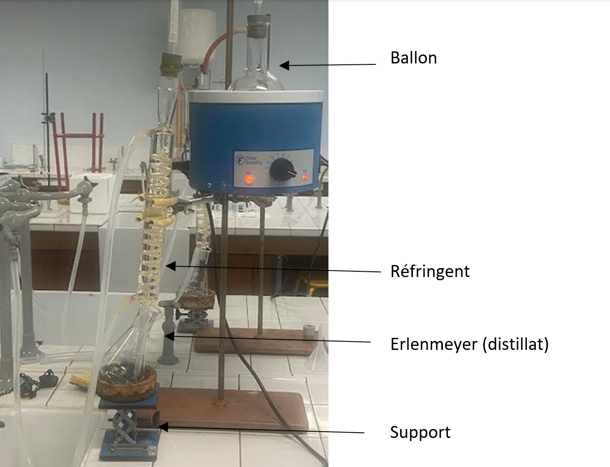
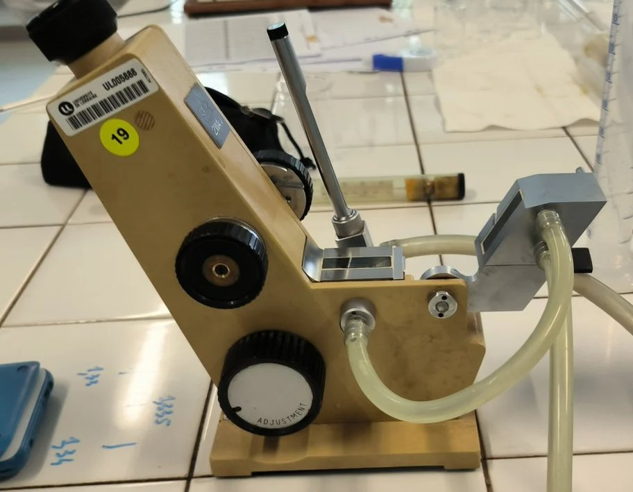
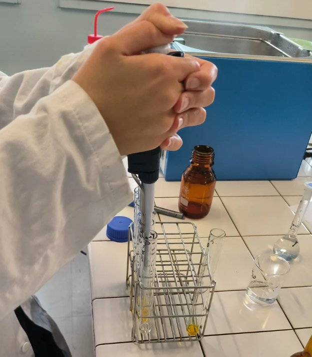
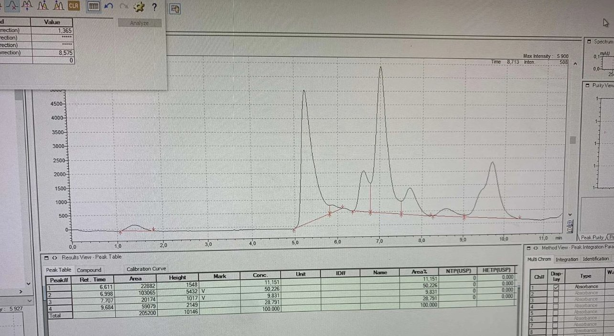

BUT Génie Biologique SAB · 2023–2024
Chardonnay · François d'Aubigné · Voltano Bianco · Jus de raisin
But : Maîtriser les principales méthodes d'analyse des composants du vin et appréhender la réalité du contrôle qualité en œnologie à travers des travaux pratiques en autonomie progressive.
Démarche : Deux séances de TP sur des techniques complémentaires — du dosage classique par oxydoréduction jusqu'à la chromatographie haute performance — pour analyser quatre composants sur trois vins blancs différents.
Les analyses ont porté sur trois vins blancs aux profils distincts, permettant une comparaison directe entre différentes origines et processus de vinification.
Sept techniques ont été mises en œuvre sur trois vins et un jus de raisin pour caractériser quatre composants clés. Chacune repose sur un principe physico-chimique différent — ce qui permet de les comparer et d'en évaluer les limites.
On distille d'abord le vin pour en extraire l'alcool, puis on l'oxyde chimiquement au permanganate de potassium. Un deuxième titrage permet de calculer exactement la quantité d'alcool présente.
C'est la méthode de référence — rigoureuse, indépendante de la température. Elle sert de point de comparaison pour évaluer la fiabilité des deux méthodes physiques.
On plonge l'alcoomètre dans le distillat et on lit directement le degré — plus le vin est alcoolisé, moins le liquide est dense, plus l'instrument flotte haut.
Méthode la plus rapide, mais aussi la moins précise. Un écart de température suffit à fausser la lecture — c'est un outil de suivi en production, pas de mesure fine.
Le réfractomètre mesure comment la lumière se courbe à travers le distillat. Cette propriété optique varie selon la teneur en alcool — une table de conversion donne directement le degré.
C'est la méthode qui a donné les résultats les plus proches des étiquettes. Rapide et précis — le meilleur compromis des trois pour un usage en contrôle qualité.
On commence par préparer des solutions de référence pour chaque acide, puis on injecte les vins dans la chaîne HPLC. Chaque acide ressort à un moment précis — son temps de rétention — ce qui permet de les identifier et de les doser un par un.
Les trois vins ont des profils acides très différents. Le taux d'acide malique renseigne notamment sur la fermentation malolactique — un processus qui adoucit l'acidité du vin et change profondément son caractère.
On mélange le vin avec un réactif qui vire au rouge-brun en présence de sucres. Plus la couleur est intense, plus le vin est sucré — un spectrophotomètre donne la concentration exacte.
C'est ce qui détermine si un vin est sec, demi-sec ou moelleux. Méthode rapide pour vérifier que la fermentation alcoolique est allée à son terme, et pour préparer les analyses HPLC qui suivent.
Contrairement à la DNS qui dose les sucres globalement, l'HPLC distingue le fructose, le glucose et le saccharose. Le vin est préparé et purifié avant injection, puis chaque sucre est identifié et quantifié séparément par la chaîne.
C'est la méthode officielle de référence en œnologie. Elle permet notamment de détecter si du sucre a été ajouté avant fermentation — une pratique encadrée réglementairement — et de caractériser finement le profil sucré de chaque vin.
On ajoute de l'iode au vin — le SO₂ le consomme. L'iode restant est ensuite dosé jusqu'à ce que la solution perde sa couleur bleue. Un dosage qui demande beaucoup de précision dans les gestes.
Le SO₂ protège le vin de l'oxydation et des contaminations — c'est un conservateur essentiel en œnologie, mais encadré par la loi. Nos trois vins étaient tous largement conformes à la limite réglementaire, le Voltano Bianco étant le plus dosé des trois.




Croiser trois méthodes différentes pour doser un même paramètre — l'alcool — rend concret ce qu'on entend souvent sur les incertitudes de mesure. Chaque outil a ses avantages et ses limites, et les voir apparaître dans les données change vraiment le rapport au laboratoire.
La partie HPLC a introduit à la chromatographie quantitative — de la construction des courbes étalons à l'interprétation des profils acides, en passant par le calcul des concentrations à partir des aires de pics.
Le vin est un produit complexe — et cette SAé l'a démontré en nous faisant dérouler un ensemble complet d'analyses complémentaires pour caractériser un même échantillon. Jongler entre DNS, HPLC, réfractométrie et iodométrie sur trois vins différents a considérablement renforcé ma rigueur méthodologique et ma capacité à choisir l'outil adapté à la grandeur mesurée.